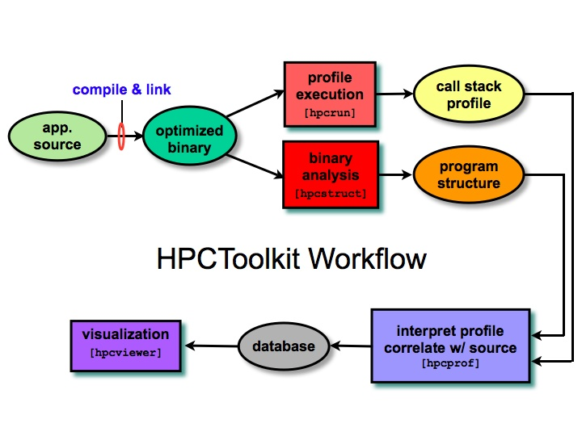

(Note: More about HPCToolkit's methodology, utility and implementation can be found in in the papers.)
HPCToolkit consists of components for measuring the performance of fully-optimized executables generated by vendor compilers, analyzing application binaries to correlate measurements with program structure, and novel analysis techniques for pinpointing performance bottlenecks in parallel programs.
Motivating Principles
We designed HPCToolkit to:
- Work at binary level for language independence. This enables HPCToolkit to support measurement and analysis of multi-lingual codes with external binary-only libraries.
- Profile rather than adding code instrumentation. Sample-based profiling is less intrusive than code instrumentation and requires only very modest data volume.
- Collect and correlate multiple performance metrics. Performance problems typically cannot be diagnosed with only one species of event.
- Compute derived metrics to aid analysis. Synthetic metrics, such as memory bandwidth consumed, often provide insight for optimization.
- Attribute costs very precisely. HPCToolkit is unique in its ability to associate measurements with dynamic calling context, loops, and inlined code.
Methodological Overview
From these principles we have devised a general methodology consisting of the workflow depicted in the adjacent figure. The workflow is organized around four principal capabilities:
First, one compiles and links one's application for a production run, using full optimization. Second, one launches an application with HPCToolkit's measurement tool, which uses statistical sampling to collect a performance profile. Third, one invokes HPCToolkit's tool for analyzing the application binary to recover information about files, functions, loops, and inlined code. (For the most detailed attribution of application performance data using HPCToolkit, one should ensure that the compiler includes line map information in the object code it generates. Since compilers often provide line map information for fully-optimized code, this requirement need not require a special build process.) Fourth, one combines information about an application's structure with dynamic performance measurements to produce a performance database. Finally, one explores a performance database with an interactive viewer. |
 |
Measurement
HPCToolkit uses event-based sampling to measure and analyze program performance. Sample events correspond to periodic interrupts induced by an interval timer or overflow of hardware performance counters measuring events such as cycles, instructions executed, cache misses, and memory bus transactions. During an interrupt, HPCToolkit's call path profiler attributes samples to calling contexts. To accurately measure code from "black box" vendor compilers, HPCToolkit uses on-the-fly binary analysis to enable stack-unwinding of fully optimized code without compiler support, even code that lacks frame pointers and uses optimizations such as tail calls. The call path profiler will store sample counts and their associated calling contexts in a calling context tree (CCT).
Analysis and Correlation.
To put measurements to use, HPCToolkit correlates them with source code abstractions. To associate sample-based performance measurements of fully optimized binaries with source code structure, HPCToolkit uses binary analysis to recover information about procedures, loop nests, and inlined code. For each procedure in the executable, the binary analyzer parses its machine code, identify branch instructions, build a control flow graph, and then uses interval analysis to identify loop nests within the control flow. The binary analyzer then combines this information with line map information that is routinely recorded by vendor compilers in a way that enables it to associate samples associated with machine instructions to procedures and loops, even in the presence of optimizations such as inlining and loop transformations such as fusion, and compiler-generated loops from scalarization of Fortran 90 array operations or array copies induced by Fortran 90's calling conventions.
Page last updated: 2008/06/14